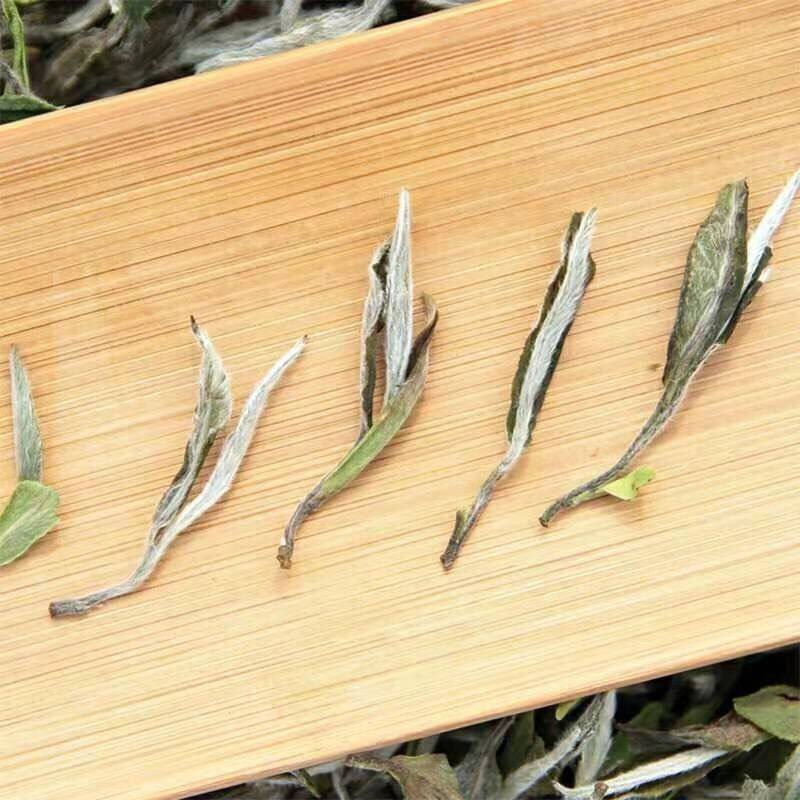
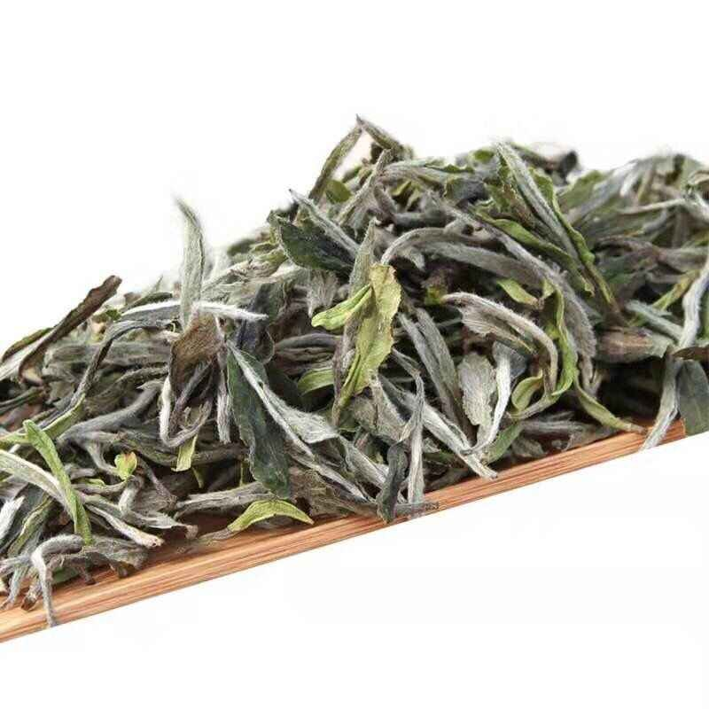

把一门手艺，拆解成游客也能看懂的过程
本页以图文与视频相结合的方式梳理福鼎白茶的主要制作流程，并通过茶品图谱帮助浏览者理解不同茶型的外观特征与风味印象。
01
鲜叶采摘
鲜叶采摘是福鼎白茶制作流程的起点，既连接茶山环境，也直接影响后续工艺展开与品质形成。

02
萎凋
萎凋是福鼎白茶制作技艺中最具代表性的工序，日光、温度、湿度与经验判断共同作用，形成白茶的香气与鲜爽感。

03
堆积与转化
叶片在静置与转化过程中逐步形成较为稳定的风味基础，这一阶段体现了福鼎白茶工艺中自然转化的特点。

04
干燥
干燥过程有助于稳定品质，也进一步强化了白茶“不炒不揉”的工艺辨识度，是理解白茶制作逻辑的重要环节。

05
拣剔与精制
毛茶经过拣剔、匀堆与装箱后进入后续品鉴与流通环节，使传统技艺与当代消费、礼赠和文化传播发生联系。

工艺视频片段
短视频能够补充静态图文难以呈现的动作细节，使工艺流程展示更加连贯、生动。
代表茶品图谱
点击不同标签可按类别浏览茶品与工艺节点信息，快速查看相应的外观特征与说明文字。